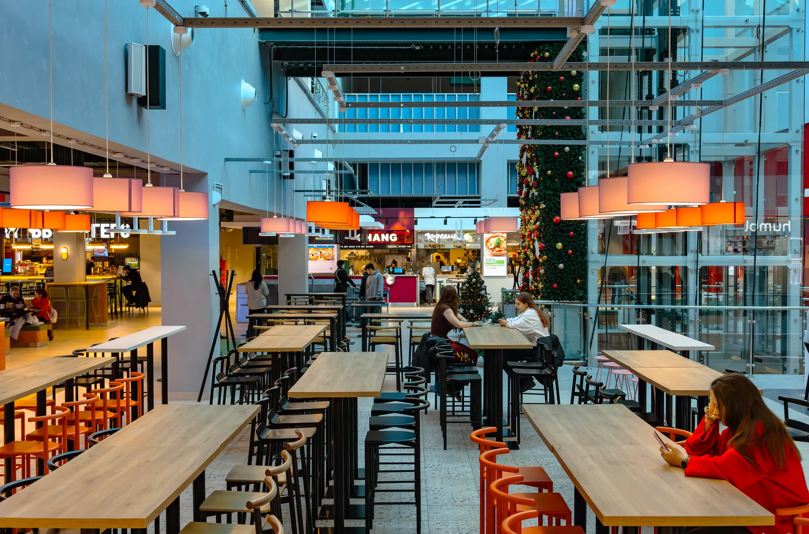
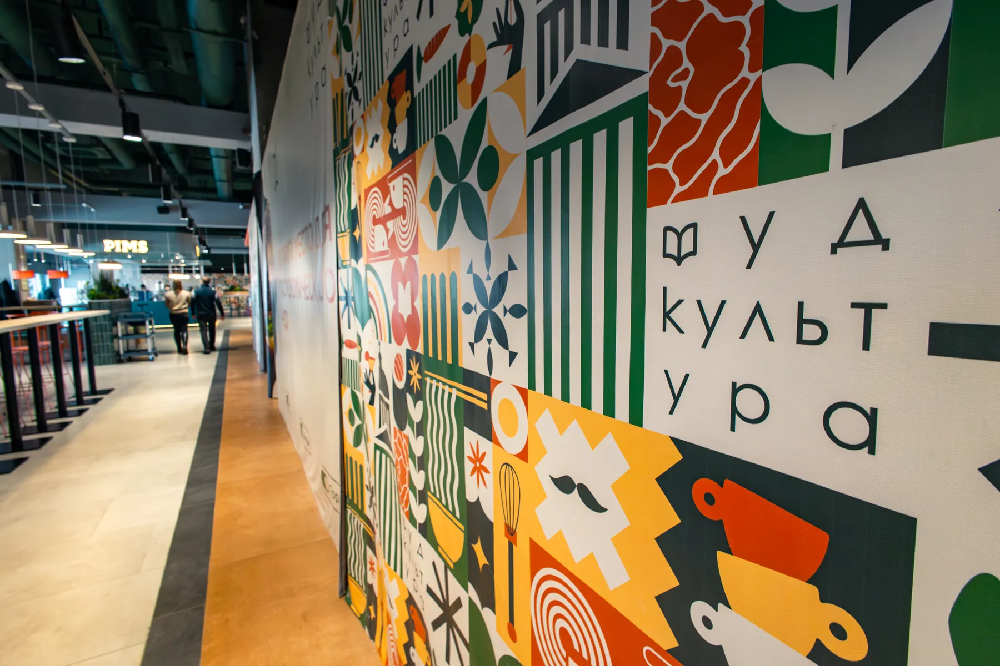

Логотипы · 6 из 17
Рестораны На одном этаже — от рамена и фо-бо
до пельменей и пиццы Меню ресторанов
до пельменей и пиццы Меню ресторанов
Афиша
Ближайшие события в октябре
Лекторий ФУДКУЛЬТУРЫ — в ноябре пять лекций, начало в 19:00. Вход свободный
Список:
Короткие видео из наших соцсетей
Больше — в наших соцсетях
Рестораны
Чем ещё заняться
Одно место на разные случаи
Wi-Fi и розеткиУ окон и за высокими столами
Можно с собакойВ холке до 35 см, есть миски
Заказ по QR-кодуЗаберите сами в корнере
Без своей еды
ИИ-заглушка · видео со съёмки зала
Пространство
Схема фудхолла
Нажмите на корнер — покажем фото и меню
Схема фудхолла
Разведите пальцы, чтобы приблизить
Откройте схему: её можно приблизить двумя пальцами, а нажав на ресторан — посмотреть фото и меню
ул. Ефимова, 2
ТРК «ПИК», 4 этажЕжедневно 10:00–22:00
Как добраться
ул. Ефимова, 2 · ТРК «ПИК», 4 этажКаждый день 10:00–22:00
- Метро
- «Сенная площадь», «Спасская», «Садовая»Три станции у самого ТРК — 1–3 минуты пешком
- Транспорт
- Остановки на Сенной площади и Садовой улицеАвтобусы и трамваи. Номера маршрутов покажет Яндекс — кнопка «На транспорте»
- На машине
- Своей парковки у ТРК нет — рядом городская платнаяС 8:00 до 20:00, от 100 до 360 ₽ в час, оплата в приложении «Парковки Санкт-Петербурга». После 20:00 — бесплатно. [где удобнее встать — уточнить]
ФУДКУЛЬТУРА · ТРК «ПИК», 4 этажЯндекс Карта, встроенная на страницу
Метро
- Спасская65 м
- Сенная площадь107 м
- Садовая140 м
Остановки
- Станция метро Сенная площадь180 м
- Московский проспект, 4288 м
- Садовая улица / Гороховая улица320 м
Такси
Вызвать таксиЯндекс Go · адрес уже подставленНа метро
- Спасская 65 м
- Сенная площадьпл. 107 м
- Садовая 140 м
1–3 минуты пешком
- Сенная площадь 180 м
- Московский проспект 288 м
- Садовая / Гороховая 320 м
- Уличная парковка по тарифу города
Внутри ТРК поднимитесь на 4 этаж на эскалаторе или лифте
Организаторам
Проведите событие в ФУДКУЛЬТУРЕ
Сцена с экраном, панорама на Исаакиевский собор и гости, которые приходят каждый день

Откройте корнер в ФУДКУЛЬТУРЕ
Фудхолл в центре Петербурга, у трёх станций метро. Расскажем о свободных местах и условиях аренды

Расскажите о бренде нашим гостям
Реклама на площадке фудхолла и совместные проекты. Пришлём форматы и условия